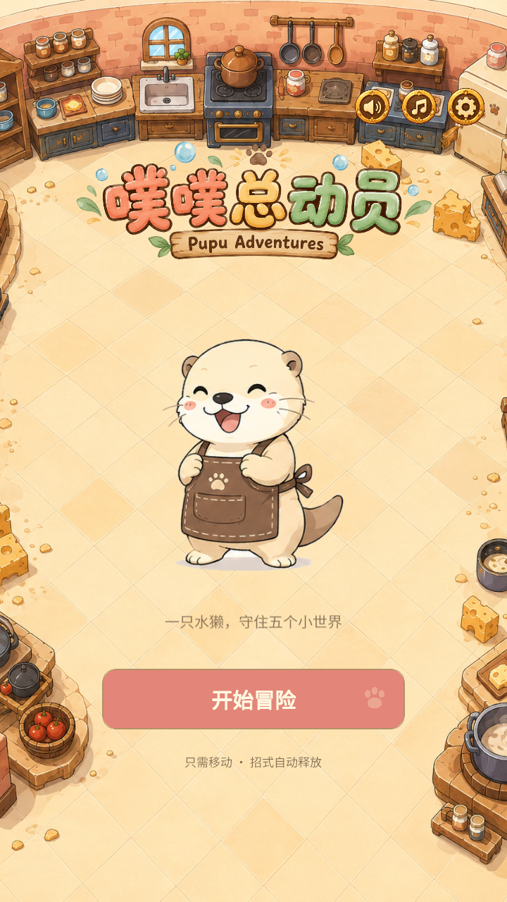
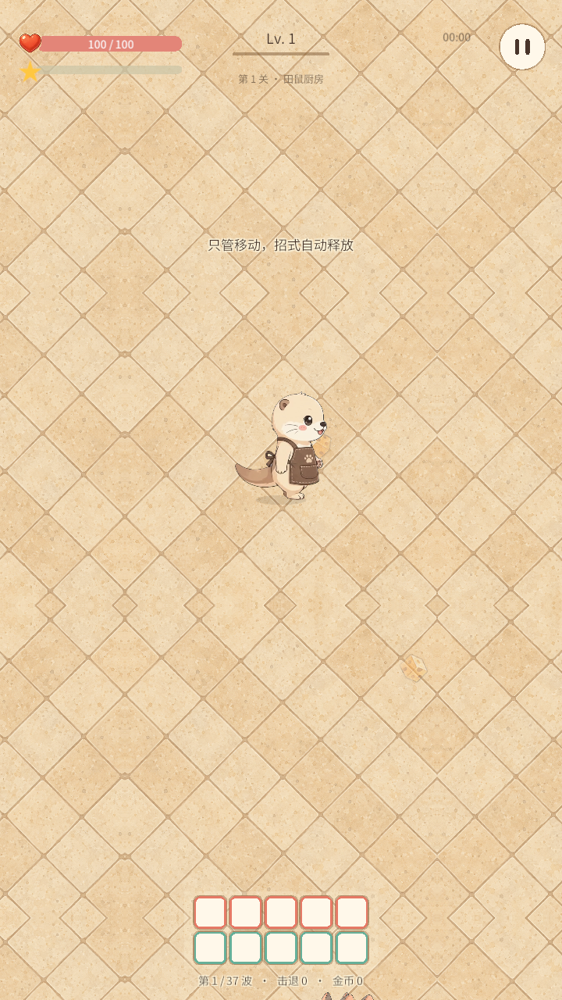
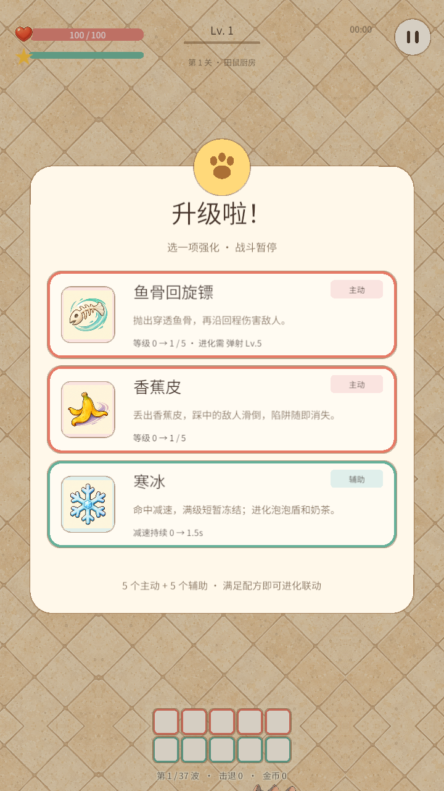
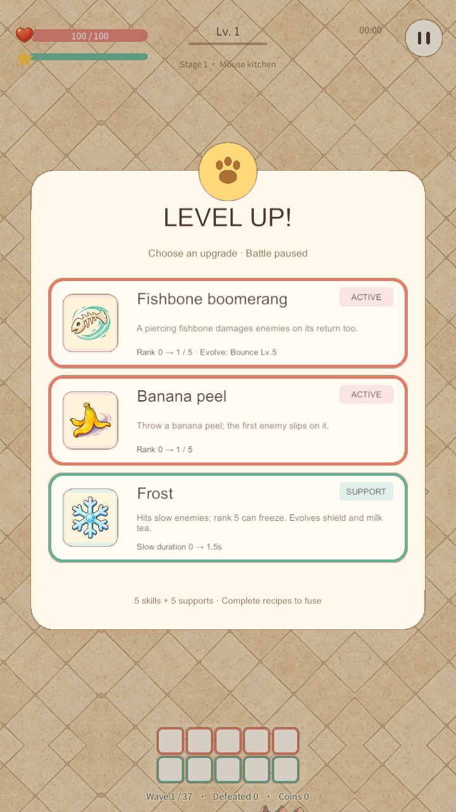
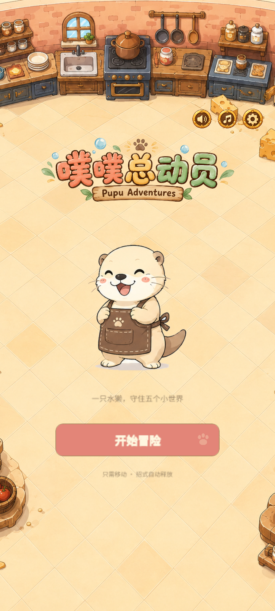
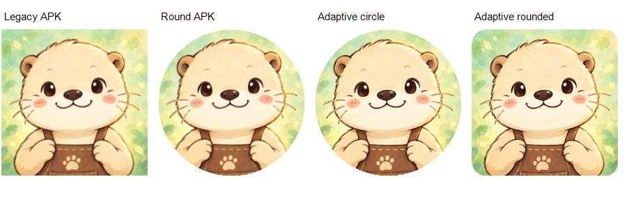

PUPU ADVENTURES · V8 BATCH 1
第一批实际界面审核
Windows 实际运行截图；安卓测试包已生成，手机安装显示待验证。
最终 Windows Player




真实长屏比例

包内图标证据

APK manifest application icon 指向 adaptive mipmap/app_icon；包名 com.cjbrain.pupu.kitchentrial，version 0.8.0 / code 8。无 adb 设备，Android 真机安装未验收。后两批尚未启动。